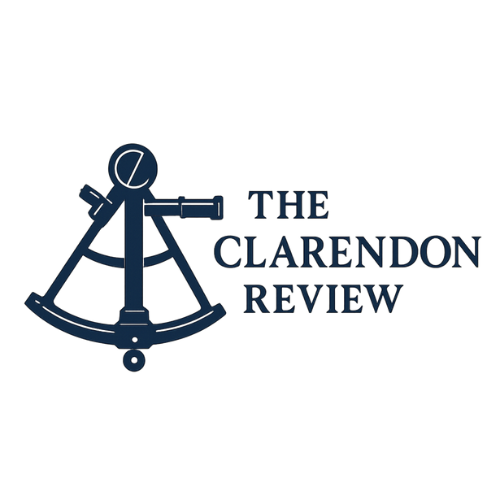

Profilo personale

Rory Gaukroger
Candidato altamente motivato e proattivo, sto cercando di costruire una carriera come sicurezza e politica dopo la laurea in Relazoni Internazionali e lingue ottenuta presso L’Università di Portsmouth in Luglio 2024. Forte etica del lavoro e dedizione agli studi, determinato a svolgere al meglio qualsiasi impiego e ad ottenere i migliori risultati. Indipendente e libero pensatore, con la disciplina e l'attenzione ai dettagli necessarie per massimizzare il mio potenziale. Sono ispirato da esperienze stimolanti e apprezzo molto il processo di apprendimento o di raggiungimento della padronanza di nuove competenze.
Vendite

Esperienza nel ciclo di vendita di prodotti su misura ad alto valore per una casa di moda sartoriale con sede a Francoforte, come parte di un processo di selezione per una posizione offerta (poi declinata). Attività svolte includevano incontri con clienti (banchieri, avvocati, consulenti), upselling, gestione account, onboarding e finalizzazione degli ordini. L’esperienza ha richiesto abilità relazionali, comprensione delle esigenze del cliente e precisione operativa. Un’esperienza che rappresenta un valore aggiunto concreto per qualsiasi ruolo nel settore del client service.
Servizio Clienti
Assistente del servizio clienti - contratto per studenti (rifornimento scorte e casse). Ho ricoperto questo ruolo a Tesco da giugno 2021 ad oggi.
Analisi dei Rischi

Realizzazione di un’analisi dei rischi per una società globale di sicurezza. Il lavoro, elogiato dal Responsabile Sicurezza - Operazioni Globali come “impressionante” e dimostrativo di “solide capacità analitiche”, includeva la valutazione di vulnerabilità, scenari di minaccia e raccomandazioni strategiche. Progetto condotto in autonomia, con attenzione alla struttura logica, chiarezza e precisione dei dati.
Analisi Politica
Un scrittatore dell'analisi politica per il suo portfolio indipendente degli articoli, iniziato a Giugno 2025 nel tempo libero. Finora questo ha riguardato principalmente il commercio internazionale del Regno Unito, ma si tratta di un progetto scalabile che si spera presto coprirà una gamma più ampia di argoment. L'intento iniziale del progetto era quello di esplorare e spiegare la posizione della Gran Bretagna in politica estera in relazione al commercio e alla geopolitica.
Candidato al BRNC
Selezionato come finalista per l’ingresso al Britannia Royal Naval College, al termine di un rigoroso processo valutativo che includeva prove di leadership, lavoro di squadra, e capacità decisionali sotto pressione. L’esperienza ha consolidato disciplina, impegno e spirito di servizio.
Stagiaire
Stagista commis-chef in una cucina stellata Michelin per un breve periodo (febbraio-marzo 2025), acquisendo una conoscenza approfondita delle pratiche culinarie di alto livello. Si è trattato di un campo nuovo, e una sfida enorme in cui sono stati dimostrati un rapido tasso apprendimento, adattabilità e capacità di lavoro di squadra. Sono state inoltre dimostrate grande attenzione ai dettagli, precisione e disciplina.
Insegnante di Inglese
Lavoro indipendente come tutor della lingua inglese (novembre 2024, febbraio - marzo 2025), in particolare nella preparazione agli esami universitari (livello B2) e per la commissione d'esame Cambridge. Ciò richiedeva spirito d'iniziativa, l'uso proattivo della lingua italiana per la ricerca di clienti e una solida conoscenza delle specifiche degli esami e dei metodi di insegnamento.
Risultati
Consiglio Associato delle Reali Scuole di Musica (ABRSM) - Pianoforte 2°
grado.
Rock School Chitarra 3° grado.
Associazione Reale dello Yachting (RYA) - Equipaggio competente di vela
pratica.
RYA Corso di windsurf.
RYA Fase 3 del programma di vela giovanile.
Instruzione
La scuola di Thomas Hardye: 11 GCSEs.
Il sesto modulo di Thomas Hardye: 3 A levels in Biologia, Chimica, ed Economia.
Università di Portsmouth: BA (Hons) Relazioni Internazionali e lingue.
Laureato
nell’agosto 2024 con una votazione di 2:1.
Interessi
Aree di interesse durante l'ultimo anno di studio: Sicurezza Globale nel 21°
secolo; Capitalismo Globale: passato, presente e futuro.
Aree di interesse durante il secondo anno di studio: politica Russa ed Eurasiatica e storia
Sovietica.
Le valutazioni comprendevano la stesura di un policy brief e progetti di ricerca altamente
specifici. Gli esempi includono un brief politico del governo del Regno Unito in risposta
all’attacco di Beslan nel 2004, e un'analisi tematica delle relazioni Sovietiche con le fazioni
dell'opposizione Musulmana dell'Asia centrale durante la rivoluzione Russa.
L'argomento della tesi di laurea è stata "L’Iniziativa Belt and Road" Cinese e l'effetto
che questa ha avuto sulla geopolitica mondiale dal suo inizio nel 2013.
Interesse pluriennale per le lingue: conoscenza fluente dell'Italiano, qualche conoscenza
del Russo (A2). Sono madrelingua Inglese. Ho seguito lezioni di Francese e Tedesco
come parte del programma linguistico istituzionale per interesse durante il percorso
accademico.
Interesse per la letteratura classica, in particolare Dostoevskij, Lermontov e Tolstoj. Sono
interessato a viaggiare e sperimentare le altre culture. Ho visitato la Russia (Febbraio
2020) e la Georgia (Gennaio, 2023). Suono la chitarra, canto, scrivo musica, e mi esibisco
in pubblico come cantautore. Ho partecipato ad eventi ‘Open Mic’ a Southsea,
Portsmouth. Credo che lo sport e l'esercizio fisico siano essenziali per una vita sana e
completa: gioco regolarmente a calcio con gli amici, mi alleno in palestra, e gioco per la
squadra di cricket del mio villaggio. Considero l'esercizio fisico un momento prezioso per
sviluppare l'autodisciplina rimanendo in salute.
Contatti
RoryGaukroger[at]gmail[dot]com
[mobile number]